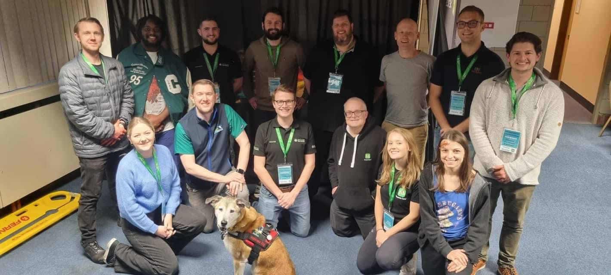

Membership
From £3 a month: the TRAUMA journal, the video library, discounted tickets and automated CPD certificates.
The UK’s largest trauma network
From the roadside to rehabilitation, we bring together every profession in the chain of care — improving outcomes through education, research and publishing since 1996.

Where to start
From £3 a month: the TRAUMA journal, the video library, discounted tickets and automated CPD certificates.
Practical, multidisciplinary training. Foundations in Trauma follows the patient from the scene of a major incident to rehabilitation.
Four days of education at the annual conference, plus CPD webinars across the trauma pathway.
Every donation funds education for the people who treat trauma patients. Give once or monthly, and add Gift Aid.
8–11 March 2027 · Yarnfield Park
Four days at Yarnfield Park bringing together experts and clinicians from across the entire trauma pathway — from the point of injury and pre-hospital care through emergency medicine, critical care and definitive treatment, to rehabilitation.
Day tickets are £115. Members save £25, early bird saves £15, and students, unpaid responders and volunteers save £15. Discounts combine, so places start at £60.
Every ticket includes lunch and refreshments, full exhibition access, time between sessions to meet colleagues, free onsite parking and a CPD certificate of attendance.
Membership
By joining you receive some genuinely useful benefits — and you actively contribute to our mission of providing affordable education to all healthcare professionals.
Trauma Care is unique. No other organisation brings together such a wide range of professionals.
Professor Colonel Ian GreavesTrauma Care Chairman